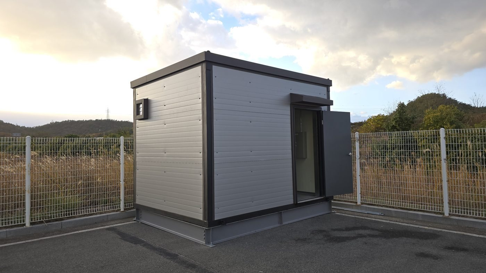

Peak shaving ESS payback in Korea: a worked example with 2026 tariffs
A 200 kW / 600 kWh battery on the industrial (B) tariff: 25 million KRW a year saved, payback of 12 to 19 years depending on cost, and what shortens it.
The short answer
On the 2026 industrial (B) tariff, a 200 kW / 600 kWh battery that lowers a factory's billing demand from 900 kW to about 720 kW saves about 25 million KRW a year before VAT, roughly 70% of it from the demand charge and 30% from charging at night and discharging in the afternoon. At an installed cost of 300 million KRW that is a simple payback of 12 to 13 years; at 400 million KRW it is 17 to 19 years. Peak shaving storage in Korea pays back only where the peak is sharp, the tariff option is high or the battery is combined with solar.
Foreign suppliers often arrive with payback figures from markets that have capacity payments or wholesale arbitrage. A Korean factory has neither. It has a demand charge set by one 15 minute peak and a time of use energy rate, and the whole case for a behind the meter battery rests on those two lines of the KEPCO bill. This note works through one example with the public rates, using the same dispatch rules as our in house analysis, so a reader can see where the money comes from and why the payback is long.
The two revenue lines
- Demand charge. Billing demand is the largest 15 minute maximum demand among December, January, February, July, August and September of the previous twelve months and the current month, with a floor of 30% of contract demand (Article 68 of the KEPCO Basic Supply Terms). At the industrial (B) high voltage A option II rate of 8,320 KRW/kW, every 10 kW permanently removed from the peak is worth 8,320 × 12 × 10 = 998,400 KRW a year, about 1 million KRW.
- Energy arbitrage. Charging in the off peak band (22:00 to 08:00, 116.0 KRW/kWh in summer on option II) and discharging in the on peak band (229.0 KRW/kWh in summer) earns the spread minus the round trip loss. In spring and autumn the on peak rate falls to 150.9 KRW/kWh and the spread almost disappears.
- Nothing else. There is no capacity payment, no frequency market for a behind the meter battery and no export under this scheme.
The worked example
The inputs below are typical of a one shift manufacturing plant and are the defaults of our free calculator. The load shape is built from a year of 15 minute data from two real factories, normalised and scaled to the inputs, with the peak placed at the busiest hour of a weekday.
| Input | Value |
|---|---|
| Tariff | Industrial (B), high voltage A, option II (demand charge 8,320 KRW/kW) |
| Contract demand / maximum demand | 1,000 kW / 900 kW (15 minute) |
| Monthly use | 150,000 kWh |
| Battery | 200 kW PCS, 600 kWh, usable range 10 to 100%, round trip efficiency 90% |
| Dispatch | Peak target from the previous 14 days plus a 20 kW forecast margin; peak shaving first, then night charging, then on peak discharge |
| Finance | 20 years, saving falling 2% a year with battery ageing, 4.5% discount rate, no tariff increase, no subsidy |
| Result (one year, before VAT) | Without ESS | With ESS, realistic dispatch | Saving |
|---|---|---|---|
| Billing demand | 900 kW | 722 kW | 178 kW |
| Demand charge | 89,856,000 KRW | 72,062,640 KRW | 17,793,360 KRW |
| Energy charge incl. climate and fuel adjustment | 301,007,611 KRW | 294,094,570 KRW | 6,913,040 KRW |
| Power industry fund 2.7% | 10,553,317 KRW | 9,886,245 KRW | 667,073 KRW |
| Total | 401,416,928 KRW | 376,043,455 KRW | 25,373,473 KRW |
The battery cycles 158,583 kWh in and 142,596 kWh out over the year, about 238 full equivalent cycles, which is comfortably inside the warranty of an LFP system. A perfect foresight dispatch, the kind HOMER or REopt report, reaches 702 kW and saves 27,363,850 KRW; the 2 million KRW gap is the cost of not knowing tomorrow's load, and we base decisions on the realistic figure.
Payback against the installed cost
The calculator asks the owner to enter the quoted installed cost, because prices differ with chemistry, enclosure, EMS and cable route. The table shows three cost levels for the same 200 kW / 600 kWh system so the sensitivity is visible. The costs are assumptions for illustration, not quotations.
| Installed cost (before VAT) | Simple payback, realistic / ideal | 20 year NPV at 4.5%, realistic | IRR, realistic |
|---|---|---|---|
| 300 million KRW (500,000 KRW/kWh) | 13.4 / 12.3 years | −17.7 million KRW | 3.8% |
| 400 million KRW (667,000 KRW/kWh) | 18.7 / 17.1 years | −117.7 million KRW | 0.5% |
| 500 million KRW (833,000 KRW/kWh) | Not within 20 years | −217.7 million KRW | −1.7% |
At the 300 million KRW level the project is close to breakeven on NPV, and at anything above that it is not. This is the honest baseline for a flat, one shift load with a 900 kW peak on option II.
What changes the answer
| Change | Effect in the same example |
|---|---|
| Smaller battery, 200 kW / 400 kWh | Saving 22,948,605 KRW a year; at a scaled cost of 240 million KRW the payback drops to 11.6 years and the NPV turns positive (+15.3 million KRW) |
| Larger PCS, 300 kW / 600 kWh | Billing demand 622 kW; saving 35,317,729 KRW a year; at a scaled cost of 330 million KRW the payback is 10.2 years and the NPV is +62.9 million KRW |
| Option III instead of option II | Demand charge 9,810 KRW/kW; saving rises to 27,528,096 KRW a year and the payback at 300 million KRW shortens to 12.2 years |
| A sharp, short peak in the real data | A factory we analysed exceeded 600 kW for only 19 hours a year; on its real data the ESS alone paid back in 8.8 years and solar plus ESS in 6.4 years |
The last row is the important one. The calculator spreads the peak over the busiest hours of every working day, which is conservative. Real factories have peaks that last minutes, not hours, and a battery sized to those minutes shaves more kW per kWh. That is why our published case, run on a year of actual 15 minute readings, shows a shorter payback than the modelled example here. The method behind that case is in our note on sizing ESS with 15 minute data.

What the calculator leaves out
- The 50% energy discount on spring and autumn weekends and holidays from 11:00 to 14:00, the excess use surcharge and the power factor adjustment.
- Tariff increases, which shorten every payback above, and subsidies, which we treat case by case.
- PCS replacement during the 20 years and the salvage value of the battery.
- Solar on the same site. With solar the battery also absorbs midday surplus, and that case is only run on real interval data.
How to get a real number
Any KEPCO high voltage customer can download a year of 15 minute readings from the KEPCO PowerPlanner portal. Send us that file and the last twelve bills, and we run the same dispatch rules on the real load, sweep the capacity from 250 to 2,000 kWh and report payback, NPV and IRR for each size, with a clear verdict. The first diagnosis is free. The public calculator used for the example above is on the Korean site (tool-ess-peak, Korean).
If you are planning a project in Korea and want this check done on your site, email the drawings or the parcel list to info@ecokkorea.co.kr. We reply with the scope and schedule first.
Sources: KEPCO electricity tariff table, industrial (B) high voltage A options I to III in force 16 April 2026; KEPCO Basic Supply Terms Article 68 (billing demand); climate and environment charge 9.0 KRW/kWh and fuel cost adjustment +5.0 KRW/kWh for October to December 2026; power industry fund 2.7%. Example results from the company's public ESS payback calculator run on 11 November 2026 with the inputs listed; installed costs are illustrative assumptions. The 19 hour and 8.8 year figures are from the company's published analysis of one factory on actual 15 minute data.
More insights
- Korean solar permitting setback rules explained
- How we size ESS for peak shaving with 15 minute data
- PVsyst vs Solar Pro cross-check on a 619 kWp roof
- Agrivoltaic structure design basics
- Electrical BOQ and quantity take-off workflow
- Korea industrial electricity tariff 2026: rates, demand charges and a worked bill
- Solar permitting in Korea: the seven steps, statutory periods and a real timeline
- Net metering in Korea: the Article 18 rules and what changes on the bill
- Korea's agrivoltaics act: who can build, where, for how long, and the draft design rules